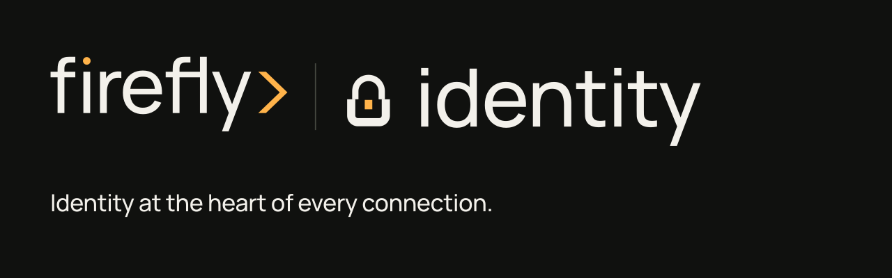

One identity.
A clear way in.
Firefly Identity joins the Firefly product family with a precise, quiet identity. A structural arch joins a broad protective enclosure. The central amber identity is held inside: a precise, immediately understandable expression of protection. The family signature preserves the official Firefly parent artwork.
Primary · light surfaces
Reversed · dark surfaces
The identity mark
Use the independent mark when space is limited. The arch and protective cradle make secure enclosure visible. The amber identity sits within the protected space, without a literal letter puzzle or familiar keyhole.
From the Firefly palette
#10110f
#f3f1eb
#ffb34a
#855414
#62645b
Repository signature

Editable SVG artwork, canonical tokens and source provenance live alongside this reference. See brand usage and rights before redistribution.